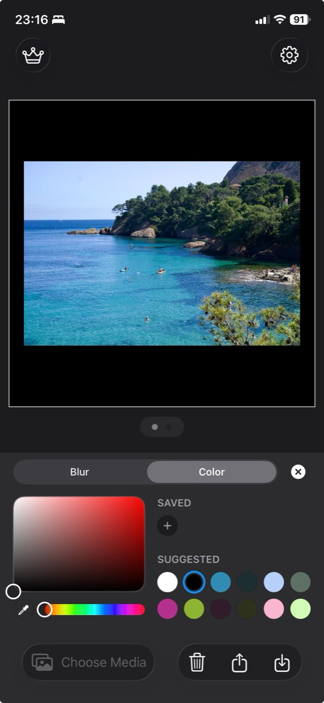

Black border or frame
Add space around all four sides when you want a consistent, print-like frame. Choose the Original ratio and increase the border width.
Create a clean black frame without cropping the image or reducing its original resolution.
A black border can create a gallery-style frame, separate a light photo from the background, or make a landscape or portrait image fit a social-media format with black bars instead of cropping.



Add space around all four sides when you want a consistent, print-like frame. Choose the Original ratio and increase the border width.
Add space mainly above and below or at the sides when the original photo does not match the chosen output ratio. Set the frame size to 0 so only the unused space becomes black bars. The full photo stays visible.
For black bars, choose the target ratio and set the frame size to 0. Simple Border fills the unused canvas with black instead of zooming into the image, so important details stay in the frame.
Black is not the only option. The color picker can suggest colors that already appear in your photo, which helps the border feel connected to the image. You can also switch from a solid color to a soft blurred border when you want the empty space to feel like an extension of the photo.
For a consistent gallery or portfolio, use the same solid black border across a set. For Stories or videos, blur can feel more immersive while still avoiding a crop.
Open the photo in Simple Border, choose an aspect ratio, select black in the color picker, adjust the border width, and export the image.
Choose the output aspect ratio you need, set the border color to black, and set the frame size to 0. Simple Border fills only the unused space with black bars instead of enlarging or cropping the photo.
No. Simple Border adds pixels around the original image and preserves its resolution inside the new framed canvas.
Yes. The same border color, aspect ratio, and export workflow works with supported videos.
For a general iPhone workflow, read how to add borders to photos on iPhone. If you are preparing a post, compare sizes in the Instagram format guide or prepare multiple images with the carousel guide.
Download Simple Border, choose black, and export a clean framed photo in a few taps.